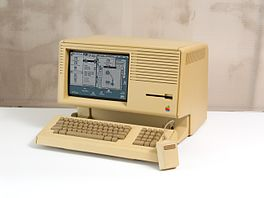
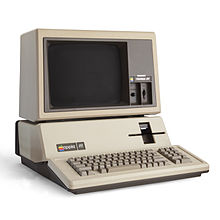

Aunque las ventas de Apple II eran más fuertes que nunca, Apple ya empezaba a trabajar en sucesor. Esta fue presentada en 1980 bajo el nombre de Apple III pero por la ausencia de ventilador muchos equipos se sobrecalentaron y provocó su primwe gran fracaso comercial. A partir de entonces, los equipos siguientes llevaban el nombre de Apple II.
Apple tenía dos proyectos en mente: Lisa, la cual debía convertirse en la nueva generación y Macintosh, la cual debía ser un ordenador pequeño y fácil de usar.
Durante el desarrollo de Lisa, Jobs tuvó la oportunidad de ir a visitar Xerox PARC y poder ver los desarrollos que habían realizado en interfaces gráficas y en el uso de un dispositivo puntero llamado ratón.Fue entonces cuando comprendió que el futuro estaban en la gráfica, copiando así la idea de Xerox en Lisa.
En 1980 Apple entra en la bolsa de valores haciendose millonaria.
En 1983 sale Lisa, la cual se vendió muy mal por su elevado precio.Aunque fue el primer ordenador con interfaz gráfica y ratón. Tras los fracasos Mike Markkula dimitió de la dirección de Apple, contratando a John Sculley.
